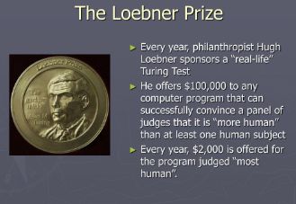

The Loebner Prize was an annual competition in artificial intelligence that awarded prizes to the computer programs considered by the judges to be the most human-like.
The format of the competition was that of a standard Turing test. In each round, a human judge simultaneously held textual conversations with a computer program and a human being via computer. Based upon the responses, the judge would attempt to determine which was which.
The contest was launched in 1990 by Hugh Loebner in conjunction with the Cambridge Center for Behavioral Studies, Massachusetts, United States.
The prize has been reported as defunct as of 2020.